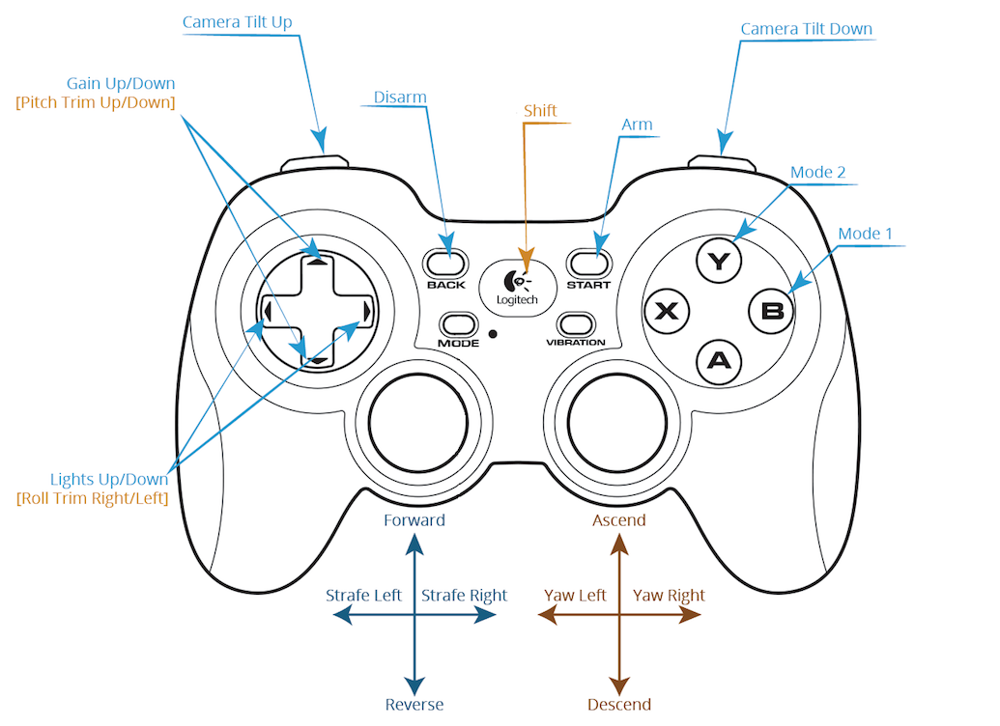
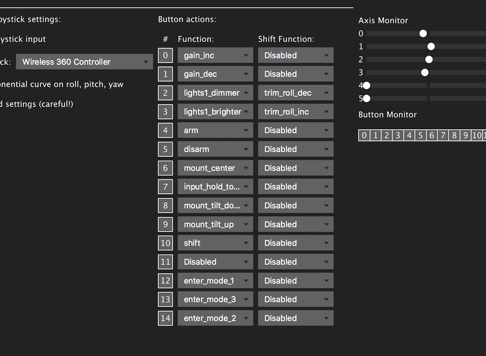
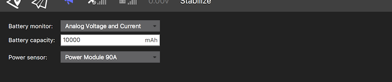
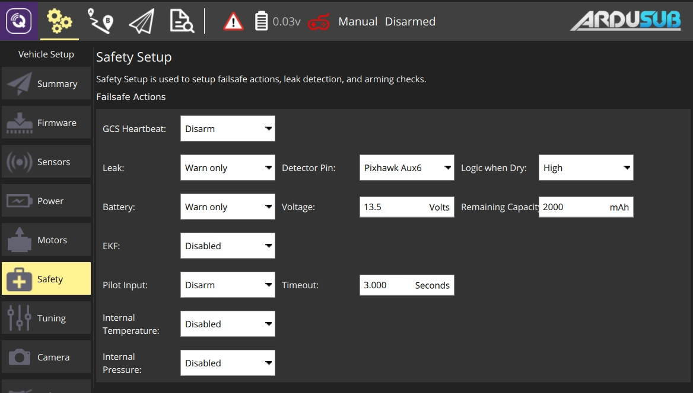
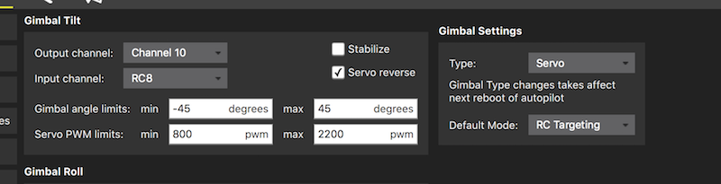
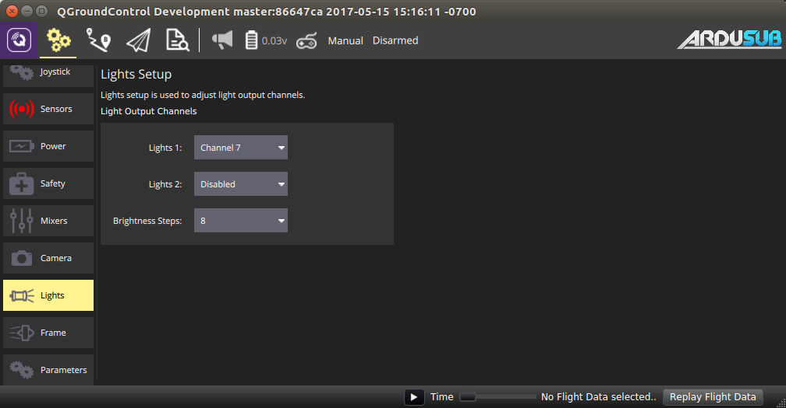
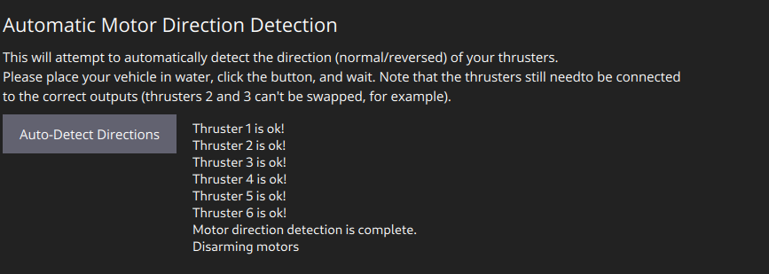
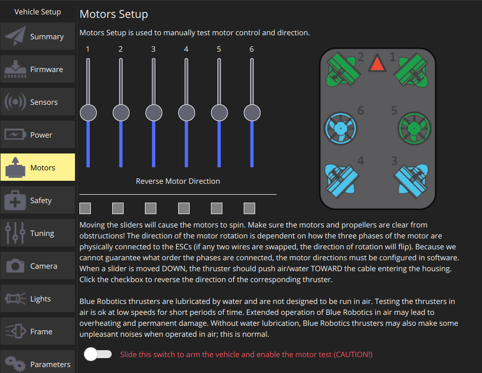

Initial Setup
After the software is installed on the electronics, the electronics need to be wired and the software needs to be configured. mounting the controller to the vehicle, connecting it to the tether, power, and motors, and then performing initial configuration and calibration.
Wiring and Connections
The exact wiring configuration depends on the vehicle configuration and the hardware used. The following are the standard channel assignments. Please see the frame configurations for standard thruster numbering.
| PWM Channel | Connection |
|---|---|
| Channel 1 | Thruster #1 |
| Channel 2 | Thruster #2 |
| Channel 3 | Thruster #3 |
| Channel 4 | Thruster #4 (if used) |
| Channel 5 | Thruster #5 (if used) |
| Channel 6 | Thruster #6 (if used) |
| Channel 7 | Thruster #7 (if used) |
| Channel 8 | Thruster #8 (if used) |
| User Configurable | LED Lights |
| User Configurable | Camera Tilt Servo |
The hardware also has other input/output ports including I2C and serial ports. These are the recommended connections for those ports.
| Port | Connection |
|---|---|
| I2C | Pressure sensor (MS58XX) |
| USB Serial Port | Companion computer (if used) |
| Power Port | Power Module |
Host Computer Setup
Just a few small setup items are required on the host computer. Please see the details here depending on which tether interface is being used.
Set Up Static IP
In an Ethernet-based setup, the Raspberry Pi defaults to the IP address of 192.168.2.2. The host computer must be set up with an IP address of 192.168.2.1 at the same network interface in order to communicate. See instructions in the Network Setup Guide.
Connect QGC to Autopilot
The autopilot can be connected to QGC through several different methods depending on the hardware used.
Serial Port Connection
If using a serial port, simply connect the port to the computer and open QGC. The controller should automatically connect to QGC and onboard data will be downloaded.
Ethernet Connection with Companion Computer
If an Ethernet connection is used, then a companion computer must be used to relay communications between the Pixhawk autopilot and the surface computer. The Pixhawk is connected to the companion computer via USB.
Ethernet Connection with Linux Autopilot (Navio, BBBmini, etc.)
For Linux based autopilots, the network connection is launched when the ArduSub code is started. For examples, please see the documentation for your respective autopilot.
Frame Configuration
The vehicle frame is selected in the Frame tab of the Vehicle Setup page. Choose your desired frame, then reboot the autopilot.
If you have compiled ArduSub with a custom frame configuration, you may select your custom frame by setting the FRAME_CONFIG parameter to Custom.
Sensor Calibration
Autopilots contain sensors that determine the vehicle's orientation and movement in 3-d space. These sensors include an accelerometer to sense acceleration and forces like gravity, a gyroscope to sense rotational movements, and a digital compass. ArduSub firmware can be operated normally without doing any sensor calibration. The sensors may be calibrated to provide more accurate data and improve performance. If you would like to calibrate the sensors in the autopilot, follow these steps:
- Go to the settings tab in QGC and select the Sensors tab on the left sidebar.
- Choose your autopilot orientation:
Nonefor level orientation (such as the BlueROV1)Roll90for the BlueROV2
- Click on Accelerometers and follow the instructions.
- Click on Compass and follow the instructions.
The main symptom that you may need compass calibration is a bad heading indication, such as showing north in compass while pointing west. See also the troubleshooting section on compass drift
Warning For using GPS-enabled modes, you must do the compass calibration.
Joystick/Gamepad Calibration
Some joysticks require calibration before they can be used with QGroundControl. This allows QGC to detect which axis is which and what the range of each axis is.
- Click "Calibrate" on the joystick page, then click "Next".
- Follow the instructions printed on the screen, and the diagram showing how to move the sticks for each step of the calibration.
- Make sure that the "Enable joystick input" checkbox is checked.
Button Setup
ArduSub provides the capability to map different joystick buttons to different functions. The default button configuration is shown in the image below:

Each button can be assigned to one primary function and one alternate "shift" function. If the "shift" functions are used, then a "shift" button must be assigned. This works like the shift key on your keyboard, altering the functionality of other buttons while pressed.
You can customize the button functions in the Joystick tab of the Vehicle Setup page. Pressing each button will light up the button number and then the desired function can be chosen. See the image below for an example setup:

Note, if using a Logitech gamepad, pressing the "mode" button causes the left joystick and the button pad to switch places. Make sure the light next to "mode" is not illuminated. Also note that to use an Xbox controller or Logitech gamepad in "X-input" mode, you must install an X-input driver. We recommend 360Controller.
Setup Voltage and Current Measurement
On the Power tab choose the appropriate setup. If using the standard 3DR Power Module, choose Analog Voltage and Current, the appropriate battery capacity, and the Power Module 90A. The battery capacity depends on the battery that you are using on your ROV and should be entered in mAh.

Setup Low Voltage Failsafe
On the Safety tab set the battery failsafe to Warning and the desired voltage or capacity to trigger the alarm. Remember you will need some power to go back home.

Lithium Batteries should not be overdischarged, as it damages their internal chemistry. Do not let each cell's voltage get lower than 3.0 V.
Camera Tilt Setup (if used)
Select the Camera tab. The "Gimbal Tilt" settings are used for the camera tilt. Choose whichever channel the servo is plugged into for "Output channel" and RC8 for "Input channel". Valid output channels are any of the unused motor outputs (RC1-RC8), and Aux outputs 1-4 (RC9-RC12). Select Servo for the "Type" under "Gimbal Settings" on the right.

Is desired, you can check the Stabilize box, which will enable auto-stabilization of the camera based on the vehicle pitch angle. We generally leave this unchecked.
Lights Setup
The output channel for the lights is configured in the Lights tab of the Vehicle Setup page. Select the output channel that you have plugged your lights into, as shown below.
This setup only works with lights that are controllable with a servo PWM pulse, such as the Blue Robotics Lumen Lights.

Configuring Motor Directions
Automatic Motor Direction Setup
As of ArduSub 4.0, it is possible to automatically detect the thrusters directions and reverse them if necessary. To do so, put the ROV in the water away from obstacles, and click "Auto-Detect Directions". The ROV will briefly pulse each thruster and check if the IMU output matches the desired vector orientation, if they don't, the corresponding thruster setting will be reversed automatically. Additional output from the process will be shown by the button, and when done the ROV will be disarmed and put back into Manual mode.

Manual Motor Direction Setup
Due to clockwise and counterclockwise propellers, as well as wiring, the motor directions will have to be tested and corrected during initial setup. ArduSub includes a set of parameters for this purpose. The parameters are called MOT_n_DIRECTION where n is the output number, and valid values are normal or reverse.
We generally follow this process to check motor rotation directions:
- Set the flight mode to "Manual"
- Arm vehicle
- Move the "forward" joystick forward and verify that the thrusters that produce some forward thrust are operating in the correct direction and blowing out the back of the vehicle
- Move the "vertical" joystick upwards and verify that the thrusters that produce some vertical thrust are operating in the correct direction and blowing air downwards

Sponsored by Blue Robotics. Code released under the GPLv3 License. Documentation released under the CC-NC-SA 4.0.
Submit a Documentation GitHub Issue here to report any errors, suggestions, or missing information in this documentation.
Submit an ArduSub GitHub Issue here to report issues with the ArduSub software.